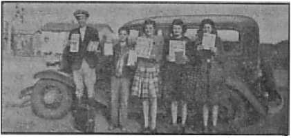

Distrust of and resistance to labor regimentation, unemployment and machine domination
Jehovah's witnesses are in the forefront of America’s fight for freedom.
A pagan celebration that dates back almost to the Flood
Five Cents a Copy
One Dollar a Year
$1.25 In Canada and Foreign Countries
Published Every Other Wednesday
Contents
The Labor Market in the U. S. A.
“In Union Is Strength”
Frame-ups of Workers
Making Unions Responsible
Uncle Sam the Model Employer
Americans and Their Advantages
The New Government
Open Letter to Attorney General Biddle
Boys May Be in Mothers’ Care
The Hate Bill Goes Overboard
Moscow, Idaho, in Error
“Thy Word Is Truth”
Is “Christmas” Christian?
Perfidious Japan
Planes over Changteh, Chinhua, and Chin
“The Whole World Our Dominion”
Three Years to Learn Japanese Legislative and Executive Departments
Honest Man Found in Congress
An American Is an American
Rankin’s Attack on the Jews
Why Not Ration Rationers?
The Situation in Canada
Presenting “This Gospel of the Kingdom” Different Types of “Conclusions”
British Comment
Joss House Religion in Britain
Inside a Monastery
3
5
5
7
8
9
12
13
14
15
16
20
21
21
21
22
23
24
26
29
30
Published every other Wednesday by
WATCHTOWER BIBLE AND TRACT SOCIETY, INC.
117 Adams St., Brooklyn, N. Y., U. S. A.
Editor Clayton J. Woodworth
Business Manager Nathan H. Knorr
Five Cents a Copy
$1 a year in the United States
?1.25 to Canada and all other countries
NOTICE TO SUBSCRIBERS
Remittances: For your own safety, remit by postal or express money order. When coin or currency is lost in the ordinary mails, there is no redress. Remittances from countries other than those named below may be made to the Brooklyn office, but only by International postal money order.
Receipt of a new or renewal subscription will be acknowledged only when requested. Notice of Expiration is sent with the journal one month before subscription expires. Please renew promptly to avoid loss of copies. Send change of address direct to us rather than to the post office. Your request should reach us at least two weeks before the date of issue with which it is to take effect. Send your old as well as the new address. Copies will not be forwarded by the post office to your new address unless extra postage is provided by you.
Published also in Greek, Portuguese, Spanish, and Ukrainian.
OFFICES FOR OTHER COUNTRIES
England 34 Craven Terrace, London, W.2
Australia 7 Beresford Road, Strathfield, N.S.W. South Africa 623 Boston House, Cape Town
Mexico Calzada de Melchor Ocampo 71, Mexico, D.F.
Brazil Caixa Postal 1319, Rio de Janeiro
Argentina Calle Honduras 5646-48, Buenos Aires Entered as second-class matter at Brooklyn, N. Y., under the Act of March 3. 1879.
The FBI Does a Beautiful Job
♦ The FBI did a beautiful job of stringing the wise men of Germany and getting Hitler to pay the bill. For a year and a half they pumped a lot of baloney over the ocean, sending some 200 or 300 messages. The secret service man that Germany thought was working for Germany was working for Uncle Sam instead. He took the money, made the radio set as instructed, and the FBI finished the job. The last message was to tell the spy headquarters in Hamburg that their New York agent who they thought was working for them, but was really working for the FBI, had received the last $6,000 that they sent. How cheerful they must have felt when they got this glad news!
Robots on Guard
♦ The new robots that guard wire fences in the dark and in storms for 24 hours out of the 24, and for 15 or 20 miles at a.stretch, are so sensitive that they can “hear” a person’s whisper or the snip of a wire-cutter and pass the sounds instantly to the nearest watchman, multiplied as many fold as is necessary. The device is so efficient that it reports the twittering of a sparrow or the blowing of a soft wind, and the report may be either through a loudspeaker or silently on a moving tape showing the exact second it was received. These robots now guard many miles of wire fence enclosing the nation’s war-production plants.
Bullet-proof Glass for Airplanes
♦ Many aviators in wartime lose their lives by being machine-gunned through the windshields of their planes by enemy fliers in the vicinity. The United States Army now has a new bullet-proof glass, three inches thick, which receives the machine-gun bullets, but powders at the point of impact; and the energy of the impact is dissipated in friction.
“And in His name shall the nations hope.”—Matthew 12:21, A.R.V.
Volume XXIV Brooklyn, N.Y,, Wednesday, December 9, 1942 Number 606
The Labor Market in the ILS* A*
REFERENCE to a “Labor Market” reveals at once a sinister fact. It represents men as well as their labors being virtually for sale, so that, from an extension of the idea, they might be regarded as chattel goods. However, things have so far “progressed” in our civilized world that man has himself some little say as to how he and his labors shall be bought and sold. That, at least, has been the situation in recent years. Now, however, there has arisen in the world a beastly power that is turning the clock backward and reverting to the unhappy ages when man was more fully under the control of his masters. Only in certain favored lands has he so far escaped the blight of totalitarianism. America has been only indirectly affected by its depredations.
There is, perhaps, only one condition that may be regarded as even worse than the necessity of selling one’s labor (and, in considerable measure, oneself) in order to enjoy the inestimable rights of life, liberty and the pursuit of happiness which the Constitution recognizes as inherent and God-given, and therefore not being subject to abrogation by human laws. That one condition that is worse than the necessity of selling one’s labor is the state of being wholly unable to dispose of it, and hence being forced to involuntary idleness.
Widespread unemployment has been one of the characteristics of modern civilization. Early in 1940 the American Federation of Labor’s “Monthly Survey of Business” revealed the interesting fact that production in the month of December, 1939, was 3 percent higher than in any previous month in American history. But it also revealed the disconcerting fact that there were in December, 1939, about 8,000,000 less jobs and jobholders than in the month of October, 1929, when the previous highest record was made. There is no valid excuse for this situation, but some of the factors that contributed to bringing it about may be considered.
The part that the machine has played in lightening man’s labors is too well known to need particular mention. Yet to think that this advantage is the real cause for unemployment is to reason without reason. It may be said that machines have replaced men and women in numberless vocations. There are many factories now, making everything from gyroscopes to silk stockings, where almost every operation is performed mechanically, and only a handful of people are needed to attend the machines, as compared with the thousands previously doing the work. True, men are needed to design and produce the machines; but their number is far less than those displaced by the machines’ greater efficiency in production.
Streamlined Production
In Washington, the Works Progress Administration reports that in all manufacturing industries 60 men are now turning out as much product as 100 turned out in 1929; also the factories are producing 32 percent more goods than in 1929 and are doing it with fewer men.
Not only in the shops and factories have machines replaced men in large measure, but also on the farms. Studies made at the Massachusetts State College show that it now takes but 100 minutes of farm work to produce as much wheat as was produced 25 years ago in 248 minutes of work.
It is astonishing to note the extent to which robots are being used to do the work of humans, work which a few years ago it would never have been supposed that machines could do. There is a hoppicking machine that picks hops twice as fast as human hands can do it. There is a machine that cuts off the tops of beets while they are still in the ground; and the tops are cut at different heights, the same as when the work is done by hand. There is a beet-lifter that loosens the topped beets, shakes the soil loose, and is said never to miss a beet. There is a machine for cracking nuts by gas. A hole is sawed in the shell, the gas is inserted, the shell flies to pieces, and the meat is unbroken. There is a gigantic "vacuum sweeper’ that harvests clover seed in twelve-foot swaths. These are some of the new inventions described by The Associated Press in a dispatch from Davis, California, not so long ago. All these inventions, of course, mean less work for humans, and they also mean the gradual elimination of the small farms, which must give way to the greater efficiency of the larger ones which are able to install the elaborate machinery referred to.
It would seem that these modern inventions would make it unnecessary to employ children to any great extent (although the value of some work for the youngsters is acknowledged). Yet children are employed, both in shops and on farms, in large numbers. Connecticut makes the headlines with tales of nine-year-old children working in the fields at 4:30 in the morning, boys being kicked and cuffed by bosses, children being left to walk home several miles after working twelve hours in the field, and the housing of boys from Florida and Georgia in buildings that are fire hazards. Thus far, Connecticut has not risen high enough to pass laws protecting children in farm work. Wherever the religious Hierarchy of Rome has had sufficient power it has by every means opposed legislation designed to protect the children and to give the jobs to adults and thereby reduce unemployment.
War Brings Work
Not only does the advent of war bring work and more work, but it also reduces for a time those able to perform it. Hence, under present conditions, labor’s best times are wartimes. More workers were employed in the United States in May, 1941, than in any other month up to that time in the nation’s history. The increase was due to war elsewhere. The much greater increase in employment now is, of course, due to the fact that America is now herself at war. But before considering the aspects of the effect of war on the labor market, the situation preceding Pearl Harbor is given some consideration.
In addition to other difficulties which confront it, labor has to contend with industrial accidents. During the year 1941 the United States lost 101,500 in that manner, which number is more than twice the number of American soldiers killed in France in World War No. 1. In addition, there were 350,000 permanently disabled, and a great host of 9,000,000 more that received minor injuries. These figures include traffic deaths. Every month during the year 1941 there were more slain in automobile accidents than the total casualties at Pearl Harbor.
Eye injuries in American industries occur at the rate of about 1,000 a day, and result, on an average, in a loss of about 27 days of work for each injury. These injuries cost the workers $100,-000,000 a year, and employers a like sum. As a result of such injuries about 1,000 yearly lose the sight of one eye, while 100 lose the sight of both eyes.
“In Union Is Strength”
While the dividing of men into groups representative of labor and capital is artificial and inaccurate, the classification may be utilized here as in some degree corresponding to the employing and employed groups. The principle of union and its advantages has long been appreciated and used by the employing classes. The result has been large industrial organizations and trusts. Use of the same principle by the employed, however, has been resolutely resisted by the employing classes, for obvious reasons. The efforts of the workers to band together in their dealings with capital have, nevertheless, progressed and borne fruit. It is largely due to their recognition of the value of co-operation that they occupy the favorable position they do today. Resistance to union demands continues. Some examples follow.
Air Associates at Bendix, N. J., had a minimum wage scale of 40c an hour, and the president of the company, who drew $50,000 to $100,000 a year, tried to keep it there. He hired several gunmen. The workers 'went on strike. Then the War department intervened, because the plant had large war orders in hand. The minimum pay scales were boosted to 75c for men and 65c for women. Production was boosted 37 percent. The president of the company was fired,; so were the gunmen. So says Labor, in reporting this victory for unionism.
Among the battles fought and won by labor is that involving Harry Bridges, West Coast labor leader. After a second trial, lasting three months, the court took notice of the fact that the testimony of competitive labor leader, Harry Lundeberg, was not worthy of belief and that James D. O’Neil (who sought Bridges’ deportation) perjured himself on the stand, gave unsworn hearsay testimony, internally contradictory, and that Bridges’ testimony on the other hand was honest, consistent and truthful. Thus endeth eight years of persecution of the man that managed the Pacific Coast maritime strike in 1934.
The CIO News, October 6, 1941, reports the office manager of the Birmingham Post, and who also is a state guardsman, as saying, “We took eight men with their guns up to Gadsden the other night and cleaned out the picket line at Republic in no time. Give me my uniform and ten good men with guns and we could clean up the Post strike in a few minutes.” This is another sample of the vicious opposition labor has had to deal with to gain reasonable consideration at the hand of capital. It is likewise an example of “law ’n’ order” in Alabama in 1941.
The CIO News, in July, 1941, claimed that at Camp Edwards, Mass., three men had to be sent to the camp hospital as a result of a drill in hand-to-hand fighting with what were significantly called “rioting strikers”. It mentioned also that there have been large-scale anti-labor maneuvers at Camp Stewart, Ga., Fort Meade, Md., Fort Ord, Calif., Fort Bragg, N. C., and Camp McClellan, Ala.
That workers and strikers might, under certain provocation, get out of hand is doubtless true. They have at times considered such amenities as acid throwing, machine smashing, or the breaking of human jaws. It seems these and other details were taught by local 150 of the United Machinists of the Needle Industries. The course of instruction indicates that the union felt there might be need for such tactics, somewhat on the principle of “an eye for an eye”, perhaps, or as a means of persuading unreasonable employers of the justice of their workers’ requests.
Frame-ups of Workers
At Detroit, a labor spy for more than four years, William A. Stinson, explained to the National Labor Relations Board how workers known to be friendly to union labor were watched, provoked into some petty violation of the company rules, and then discharged. If the man was very careful to obey the rules, oil and scrap might be dumped on his floor, and then he would be fired for sloppy work. Or a fight might be started by a conspirator; then both would be fired, but the conspirator would be re-engaged. Many an innocent man has died looking for work, all because he believed in the right of labor to organize.
At St. Paul, Minn., the Pioneer Press of April 4, 1941, contained pictures of many men assaulting a worker at the Ford Motor Company’s plant at Dearborn, Mich. One of the men with upraised bludgeon, and a terrible look on his face, wore an American Legion cap; one of his comrades also had on a Legion cap. That, probably, made the whole thing “legal” and “American”—or did it?
Homer Wilson, a C.I.O. organizer, after attending a meeting of employees of the Mead corporation mill, was dealt with as follows at a spot near Harriman, Tenn. This is his own statement:
They tied me to a tree and blindfolded me. Someone beat me unmercifully until I thought I was dying. I just gave up and fell down. A voice said, “He ain’t out; make him stand, up to that tree.” Then someone kicked me until I stood up. Then they beat me some more. I fell down again. Then they began to kick me again. Somebody started to lift me up and someone else said, “Let me hit him.” Then I was hit on the mouth and four front teeth were knocked out. The men went to the car and got something and came back and began pouring hot tar on me. Somebody remarked, “There’s kerosene in the car; just put that on him and set him afire.” Someone else said, “Give me a match,” and then someone said, “Don’t do that; you will start a fire here.”
Not Illegal to Hunt for Work
It is not illegal to hunt work, at least not in New York, and not yet. In the Bronx 64 women were taken into custody because they sought work as domestics at their usual rate of 35c per hour. Only one of the 64 was on relief, but they all wanted work, and had applied at what are called the “slave markets” in the section named. At these markets, on the streets, women domestics and young boys gather daily in search of day-to-day housework. After being questioned all day the women were fed and given a day’s pay and then released. Welfare agencies had been somewhat disturbed by these open labor markets. But women as well as men must get work in order to live. This was not so easy a year or two ago. The difficulty is at least temporarily eliminated by the increased demand for labor resulting from the war.
About two years ago, in an appeal before a Congressional committee at Washington Miss Florence Birmingham, president of the Massachusetts Women’s Political Club, made the statement that there were then 100,000 homeless women in the United States and that the employment of 6,000,000 married women compelled great numbers of young jobless girls to choose the only way left open to them except suicide.
Women in factories often have to contend with or endure many difficulties. The government has found that in 16,000 Pennsylvania factories there are 228,000 women exposed to hazardous dusts, 19,000 to extremes of temperature, 14,000 to unreasonable speed-up operations, 12,000 to metal poisons, 6,600 to paints, and 4,500 to lead compounds. In one-fourth of the factories the workers had to use common drinking cups and common towels. In 600 factories there were no drinking facilities, and 700 had no toilet facilities.
Better wages for women are among the objects of unionism. The Ford Motor Company has agreed to give equal pay to women. In other words, they are to receive the same rates as men when they do the same kind of work. That should always have been the rule everywhere. Unskilled workers at the Ford bomber plants get 95 cents an hour, with pay for skilled mechanics up to $1.60 per hour.
Having given in 100 percent to the C.I.O. the Ford Company now has the right to put union labels on all its cars and the largest automobile shop in the world (85,000 in the River Rouge plant alone) will hereafter be a union shop. The Ford Company has 45,000 employees elsewhere, and all of these go into the new union arrangements, with pay adjustments to suit the C.I.O. demands.
Making Unions Responsible
It is obvious from the foregoing and other evidence that the unions are having their effect in improving the lot of the worker. Their effectiveness, however, has resulted in an abuse of the power wielded by the officials. To check these abuses and' to give labor a square deal all round, it does seem, as the New York Daily News suggests, that the government should see to it that union elections are on the level, union books are audited regularly and the findings published, and excessive initiation fees and dues are not charged. The public knows considerable about the way in which racketeers have muscled in on some of the labor unions, to their own enrichment and the despoliation of the actual workers.
In this connection Robert S. Binkerd, in the Atlantic Monthly, inquires:
Why shouldn’t annual union elections be required by law? Why shouldn’t union members have the protection of a secret ballot in union matters as well as in political matters ? Why shouldn’t it be a felony to stuff a ballot box at a strike vote, or a union election ? Why shouldn’t regular financial reports of union moneys collected and spent be required by law? Why shouldn’t such statements be verified under oath, and willful misrepresentations be punished ? Why shouldn’t independent outside audits of such statemen+s be required by law ? Why shouldn’t union officials be required to distribute the opportunities for work fairly among their members? Why shouldn’t the use of force, intimidation or misrepresentation be just as illegal for union leadership as it already is for the employer? Why shouldn’t each labor organization be required to file with the National Labor Relations Board, at least annually, its place of business; the names and addresses of its officers; their term of office and compensation ■ the date of their election; the scale of dues, assessments and fines; latest financial statement; constitution and by-laws; and any other information necessary to maintain an aboveboard relationship with its own membership, the Government, press, employer and the public ?
As an example of the abuse of union power, a three-column story in the New York Times pointed out that to get a job as a carpenter at Fort Meade, Md., a man had to be able to saw and nail and to pay $57.50 to the union. Then he would receive $1.25 an hour for forty hours a week and $2.50 an hour for all overtime. To get extra time with some foremen it was necessary to bring a quart of liquor every other week. No liquor, no work. The big fellows in the union were estimated to have scooped in $400,000 while the scooping was good. The army men' who directed the work said that 99 percent of the men did not want to join any union, but they had to join, as it was a union job. The labor cost on this one cantonment job ran to over $12,000,000—more than half the ultimate cost of the camp!
At another army cantonment it was necessary to pay $1,500 for a union card, and in some camps carpenters had to pay as high as $250 to get work. In one camp 170 non-union men were permitted to set glass for the government so long as each one of them paid $2 a day to the union.
What Is Done with Union Funds
The way some portion of the union funds is expended is well illustrated in the Lewis family pay roll. John L. gets $25,000 a year and expenses as president of the United Mine Workers; his daughter Kathryn, $7,500 a year and expenses as secretary of District 50 of the same; his brother Denny, $12,000 and expenses as chairman of United Construction Workers Organizing Committee ; his brother-in-law, $6,000 as controller of the C.I.O.; another brother-in-law (Floyd Bell), $40,000 a year for looking after the financial affairs of the U.M.W. locals; the latter’s son-in-law, $3,600 a year and expenses as organizer of District 50 of U.M.W.; another brother-in-law (Orin Miller), $5,000 a year as superintendent of the U.M.W. building in Springfield, Ill.; the latter’s daughter Ann, $2,400 a year as stenographer in District 12, U.M.W.; another brother-in-law, Dan Collins, $2,600 a year and expenses as organizer for C.I.O.; his cousin, William Thomas, $5,000 as superintendent of U.M.W. building in Washington; and the latter’s sister-in-law, Margaret Lindeg, $2,400 as stenographer in U.M.W. So says the Easton (Pa.) Express for April 21,1942. This one family’s haul of $111,500 and expenses for looking after the interests of the United Mine Workers and other C.I.O. affiliates is a mere bagatelle compared with what some of the Big Business heads are doing for their relatives. Yet it seems a big start, and illustrates the need of some effective check. It also explains why some workers are not anxious about joining a union.
Forty years ago George F. Johnson organized the Endicott-Johnson Shoe Company of Binghamton, Johnson City and Endicott, N. Y. The concern paid good wages, divided profits with the employees, provided sick benefits and medical care, promoted according to ability, arbitrated grievances, financed home building at low interest rates and provided free libraries, parks and other things that make life interesting. The A.F. of L. and the C.I.O. wanted to unionize the place. The employees to the number of 15,384 voted on the question. Only 7 percent voted for the C.I.O., 10 percent for the A.F. of L., and 83 percent did not want any union domination at all. They liked the company, liked the management, and wanted to be let alone and have the management let alone, too. However, such ideal conditions are rare, and are the exception to the rule.
Uncle Sam the Model Employer
In October of last year Uncle Sam had 1,086,171 employees and paid them enough that they averaged to receive $153.24 for the month. This is at the rate of $1,849 per year per employee, and justifies in considerable measure Uncle Sam’s claim that he is the country’s model employer. Besides good wages there are special advantages in working conditions, vacations, sick leave and pensions not open to most citizens. (Why should not these be made the general standard?)
The United States News has pictograms showing that wages generally are now the highest ever. In 1929 the average wage rate was 56.6 cents per hour; in 1939 it was 64.4 cents; and in 1941 it was 72 cents, with the average workman employed 41 hours per week. There is time-and-a-half for overtime and sometimes double pay for work on Saturdays and Sundays; so the workers are now getting just about $30 per week as against $26.40 in the palmy days of 1929 or $24.58 in the shivery days of 1939. This increase in earnings is considerably offset by the great increase in the cost of living.
The average earnings of workers in manufacturing industries at $30 is exceeded by earnings in the war industries, which are about $7 higher. This differential is natural. The wal workers have to leave their homes and live under unusual conditions. Their expenses are higher, and if and when peace comes they will find themselves out of work and with their old jobs in the hands of those who stayed in their own homes and worked in the near-by factories and shops.
Uncle Sam had not a particle of trouble hiring men for the rebuilding- of Pearl Harbor. When invitation was sent out in New York city for 800 men qualified to do special work, such as boilermakers, acetylene-burners, instrument makers, riveters and bomb-sight mechanics, there was a rush of more than 1,500 men, eager to go, and not one of them mentioned the possibility of the return of Japanese bombers. The men could not take their wives and children. Those selected were not compelled to take any written examinations, but were rushed across the continent in Pullman trains and given the best of everything, American style.
Making Unnecessary Work
The government wanted to build 300 houses for defense workers in Michigan. The first bids were all rejected as too high. The next time the bids were opened the Currier Lumber Company, which makes a specialty of prefabricated homes, had a price $1,400 under the next in line. It could build the houses at $3,200 each and make a profit. The next in line wanted $4,600 per house. Yet the Currier Company’s bid was rejected, because the American Federation of Labor doesn’t believe in prefabrication. The houses might be just as good; they might even be better; but they have less labor in them. And so, says Raymond Clapper, columnist, the bid was rejected, in order that the government would not have to lock horns with the A.F. of L. In this instance the A.F. of L.’s policy is shortsighted and foolish. The government is having difficulty in providing homes for defense workers, and there seems to be no reason for trying to make unnecessary work for anybody.
In Maryland, near the Glenn L. Martin aviation plant, the government has established a trailer city, and it seems that the plan would be practical anywhere. A good trailer home is provided for a rental of $6.50 per week, the A. F. of L. permitting.
Holding rents down to reasonable figures, the Price Administration ordered 20 communities to reduce their rents within sixty days to about what they were on April 1,1941, and indicated that 100 other areas would be given the same opportunities to make conditions more tolerable for the workers. Yet with costs rising in other fields, an arbitrary clamping down on certain branches only is unwise. It seems that only unwarranted increases in costs, whether of rents or other necessities of life, should be checked—and punished.
Americans and Their Advantages
The advantages which Americans have had over other nationalities thus far seems likely to fade away with the rising costs of the necessities of life. These hitherto advantageous conditions are remarked upon as follows by the Machinery and Allied Products Institute, Chicago:
Numerous studies of the relationship of wages to cost of living have shown that the average American worker can buy approximately twice as much with the earnings of an hour’s work as the English worker, three times as much as the German, and four times as much as the Italian. In most comparisons Sweden ranks closest to the United States, with an hourly wage which will buy approximately two-thirds as much as the hourly wage in the United States.
Probably the best evidence that American incomes are vastly greater, in terms of purchasing power, than those of other countries is the actual goods and services enjoyed. Although the United States contains only 6 percent of the world’s area, and only 7 percent of the world’s total population—
Americans operate 33 percent of the world’s railroads;
Americans drive 80 percent of the world’s automobiles;
Americans use 60 percent of the world’s telephone and telegraph facilities;
Americans own 50 percent of the world’s radios;
America’s 130 million people enjoy more purchasing power than 500 million in Europe, and more than one billion in Asia.
In some respects the war will temporarily increase the prosperity of the workers, although rising costs, as shown, threaten the security of others. There is much work to be done. The four-crew system, now attracting marked attention, works every machine every minute of every day in every week for twenty weeks, but the workers are on the job only forty hours per week. The day is divided into three shifts, beginning at midnight. Each man works five consecutive days and then lays off two successive days every week for three weeks. The fourth week he works six days and is off only one day. Each crew changes shifts weekly. In twenty weeks a man works 105 days, that is, 35 days on each shift. Days off are equalized, and free Sundays also. In twenty weeks each worker has five paydays with ten days’ pay each and five paydays with eleven days’ pay each. It is a brilliant, clever, excellent arrangement for an emergency calling for the complete use of the machines, and it is good for the men also.
Not only is it important to make full use of machine-power. It is also considered necessary to employ fully all the man-power available, and to see that each man does all he can. All noise to the contrary, there have been no strikes affecting war work worth mentioning. During the first quarter of 1942 the idleness resulting from walkouts amounted to six one-hundredths of one percent of the total hours worked, and this figure would have been still lower than it was if figures did not include non-defense workers’ strikes.
Chamber of Commerce
Swings by Its Tail
March 18, 1942, there was a showdown on the labor situation in Congress and the speaker of the House of Representatives made the statement that, on the day previous, out of some 7,000,000 war workers then working there were fewer than 100 of them on strike. This was backed up by a statement by the chairman of the War Labor Board that during January and February strikes were brought down to so low a level that the time lost in war production was only about two one-hundredths of one percent. These facts were published in the New York Times the next day, the news having been furnished by The Associated Press. The fact that Labor was standing by its promise not to strike for the duration of the war was so self-evident that anybody could see it. But the U. S. Chamber of Commerce waited only two days after the overwhelming showing made by Labor and then sent out a letter urging all local bodies, trade and industrial associations to become aggressive in putting pressure on Congress to pass fresh legislation curbing labor. Only a cage of monkeys would have chosen such a time for such an exhibition of ability to swing by a caudal appendage!
Defending the shipyard workers the North Bay Labor Journal arises to remark:
The available shipyard workers of the last World War were in many eases badly spoiled by the cost-plus system used so much then for building ships and under which men were encouraged to loaf and produce as little as possible in order to pad the costs and enlarge the percentages to be paid to the eost-plussers.
The Journal goes on to say that, since the first World War, shipbuilding has lagged in America and practically no new shipworkers were trained. When the second one came along it was necessary to start from scratch, and it was not reasonable to expect men to become expert mechanics overnight. But now the men are getting onto their jobs and it won’t be long before an immense output of ships of all kinds will be available for use on the seven seas.
At the Fore River (Mass.) plant of the Bethlehem Steel Company the workmen undertook to clip 29 days off their best previous record for a ship of the size they had to make, a 12,700-dead-weight-ton tanker. They beat their own estimate, and the ship went down the ways in 76 days instead of the 119 of record. The cry of the workers was, “We can build ships faster than they can be sunk/’ In one of the weeks they erected a thousand tons of steel, which was considered a record in itself. Since then Kaiser, at Oakland, California, launched a 10,000-ton ship in 5 days and is employing solid trainloads of workers from New York city.
Labor seems to be trying to do its part, but its efforts do not appear to be appreciated in all quarters. At the Houston (Texas) Coliseum, in a drive “to increase war production”, several speakers attacked the forty-hour week and time-and-a-half for overtime. The workers present were aroused and demanded to be heard also. This was denied, whereupon a number of them marched to the platform and shouted into the mike that the radio audience was being deceived. The situation became such that the workers were promised a hearing, but they were not allowed to speak until the close of the program, at which time, of course, only those present in the hall itself heard them.
End of the “Labor Market”
Evidently there are those who would be glad to use the war as a means of depriving labor of the gains it has realized through many struggles. Doubtless men can work more than forty hours a week, and they often do. But a reasonable limitation of working hours should be recognized and the workers realize the need of safeguarding themselves from the demands of the never-satisfied Big Business crowd.
The Industrial Health Research Board of the Medical Research Council [some name, that] of Great Britain studied 50 British factories, employing 200,000 workers, and came to the conclusion that men should work not more than 60 to 65 hours per week, and women not more than 55 to 60 hours. Marked benefits to health and to production were noted when long hours were followed by staggered holidays. It was definitely learned that sustained effort produces better results than violent spurts.
Scientific research is, then, on the side of the worker and his rights and reasonable demands. “The labourer is worthy of his hire,” says Scripture,; and that is true in all fields. Further, “The profit of the earth is for all,” and a happy condition among man can result only from a more rational and fair distribution of the product of man’s toil. In the New World, wherein dwelleth righteousness, and which is now at the doors, it will no longer be necessary for man to labor and earn his bread by the sweat of his brow, nor will he be called upon to struggle against great odds to get even a reasonable return from his efforts while another walks off with the lion’s share of what has been produced. No longer will it be needful to compete in a “labor market” for the privilege of working or making a living. There will be work enough for all, yet not too much for any. With conditions such that strength will replace weakness and health replace sickness, it will be pleasure to work and produce those things which are for the use arid enjoyment of both oneself and other creatures. Inventive ability and exercise that now contribute to idleness and resultant poverty will then be conducive to greater production and consequent wealth.
But only the upright will attain to that world and its blessings. Indeed if the unrighteous were not excluded it could not be realized! For it is the unrighteous and wicked that have continually cast a blight upon the blessings that could otherwise be the portion of mankind. It is for the purpose of eliminating the wicked that Armageddon is fought by Jehovah’s great Warrior-Executioner. The oppressor will be at an end, and earth’s great sabbath of rest will have come. The time is at hand.
Open Letter to Attorney General Biddle
♦ Please find herewith a copy of August 5, 1942, Consolation magazine. While there is other valuable information for you in this issue, the article on page 20 is especially for your attention. The purpose of this letter is not only to bring this subject to your attention, a full report of which you no doubt have in your files, but especially to call your attention to several other similar outrages against Jehovah’s witnesses and in which I had personal experience and witness along at the same time (summer of 1940) and at the hands of the same lawless elements. Although these matters have been repeatedly reported to you, with affidavits, so far as I am informed, nothing has yet been done in bringing the guilty parties to justice.
I hereby again call your attention to two of these experiences, which I briefly summarize as follows:
At Odessa, Ector county, Texas: After having been given permission by the county judge (Mr. Denison) and county commissioners to use the courthouse room and the County Auditorium for assembly places for study and worship and for public meeting, and the new swimming pool for baptism, for the local convention of law-abiding Christian people who are Scripturally known as Jehovah’s witnesses, we assembled at Odessa on June 1,1940. As soon as we began our regular Saturday afternoon public witness service with the Watchtower and Consolation magazines, a mob, instigated and led by the then county sheriff (Reader Webb) and his deputies, the constable, county judge and county attorney, attacked us and broke' up the service and the assembly, made a fire in the street and publicly burned the property of the friends, put 35 of us in a prison cell until 10 a.m. the next day and then drove us for many miles along railroad track to Midland. This matter has been fully reported, with affidavits, to your department and also to the U. S. district attorneys, especially to Mr. Clyde 0. Eastus and his assistant, Mr. Wm. Fon-ville, at Forth Worth. I have copies of many of these affidavit statements from these brethren.
At Seagraves, Gaines county, Texas: One week after the experience at Odessa I went to Seagraves to call on some friends. On arriving there for the first time, I called at the postoffice for mail which had been forwarded to me. The postmaster, who evidently had been watching for me, followed me to my car, and he together with the town marshal (Mr. Asher) and the constable (Air. Milton) took me and my car to the office of the justice of the peace (Mr. Godwin), the officers stating that I was under arrest. There, after being questioned and threatened for several hours by the officers and members of the (un-) American Legion, I was confined in filthy prison until the next morning. While this was going on, the mob, led by the marshal and constable, opened and plundered my car, damaging the same, and took away money and property to the amount and value of approximately $300, the property consisting of Bibles, literature explaining the Bible, phonographs and many records containing recorded Bible speeches, all of which were used in the Christian educational service which we freely carry on with the people who desire the same; other personal property was also destroyed, being burned that night near the jail, by the mob, in the presence of a large crowd of people who had gathered to see what was going on. The county sheriff was also present and witnessed this mob-action, but did nothing towards performing his duty as an officer of the law, but even further threat-
Nicolas Argyros, Jehovah’s witness, pioneer, placing Kingdom literature with fishermen of Yacuiba, on the shores of Itiyuro river in southeastern Bolivia, South America
ened me when I called on him at the courthouse at the county seat (Seminole) the next morning.
Now, you may wonder (and this point of information is very important), why this flare-up of opposition and persecution of Jehovah’s witnesses which took place simultaneously and in the same way throughout the United States during the summer of 1940. Read the truthful statements in Judge Rutherford’s booklets Conspiracy Against Democracy (particularly pages 16 and 17) and ‘The Fifth Column Uncovered’ (especially pages 9, 13-15), both of which booklets were published in 1940, and also the booklet Fascism or Freedom, page 14 in particular. You may already have these booklets. However, under separate cover I am sending you a copy of each of the three booklets. From these plainly revealed facts you can clearly see that “Catholic Action”, by and through its “fifth-column” activity, had definitely planned to do in America just what it did do in France in 1940. Just before such action was planned to take place a nation-wide petition was circulated by Jehovah’s witnesses and companions, which petition embodied the upholding of the Constitution of the United States, the fundamental law of which is based upon the Bible teachings. Except for the bold and courageous stand taken and service rendered by Jehovah’s witnesses in the time of crisis, thus enlightening the people and exposing the enemy’s plot, even in the face of such violent opposition and bitter persecution by our enemies and their dupes, what would have taken place in America? Judge for yourself. Yours respectfully, A. L. Paschall, Texas.
Boys May Be in Mothers’ Care
♦ In Exeter, New Hampshire, religionists caused the arrest of a boy under 10,
who, on the street with his mother, was offering the message of God’s kingdom in magazine form to those who wished it. He was arrested for violation of the Labor Act. The Supreme Court of New Hampshire dismissed the charges against him, using the following language :
It is thought that the activity in which the boy under the defendant’s leadership was engaged is not within the tenor and spirit of the prohibition of sales in public places. His service was not fairly to be classified as a business enterprise or as work, in the ordinary sense of words. To use a common expression, he was not exploited to help as a source of family income and material resources or to promote the defendant’s financial welfare. Any exploitation of the boy was for other than pecuniary ends. He was performing a service under his mother’s auspices, and the few cents he received were no impaction on the controlling religious character of his service, so as thereby to transform it into one of employment or work. The money-making feature of his service is too insignificant to receive notice as a factor modifying a strictly religious engagement into one with business attributes. The boy was not a newsboy on the occasions in question, and an occupational element, even of temporary duration, is not to be ascribed to his activity. Nor is there any claim that his education required by law was disturbed or menaced. The defendant was not the boy’s employer and neither permitted nor suffered him “to be employed or to work”, in any reasonable contemplation of the statute. While the defendant was paid for his service as a “pioneer” in his cause, those enlisted under his leadership were followers rather than em-
Baptism at Manzanillo, Oriente, Cuba
14
Arizona pioneers enjoying their evening meal in the open
ployees. They were workers only in a sense devoid of business and material gain.
The State’s argument that the statute was partly designed to protect the morals of young children by keeping them off the streets and out of public places, is not impressive. So far as concerns the case, the boy was in his mother’s custody and general charge. In respect to the statute, it would be a clearly unreasonable discrimination that young persons might be on the streets with nothing to do, while others might not if they had some occupation there.
The Hate Bill Goes Overboard
♦ At the instance of the totalitarian crowd, and in order to "get” Jehovah’s witnesses, the New Jersey legislature some years ago passed a bill, commonly called the “hate" bill, which would make it illegal for anybody to tell the truth on any subject if it instilled hatred toward anybody or toward any organization. The Roman Catholic Hierarchy cannot
Magazine publisher for the Kingdom. Fifty years in its service and still at it. Ithaca, N. Y.
endure that anybody should tell the truth about their horrible doctrines and equally horrible history.
The first persons arrested under the bill were Jehovah’s witnesses, which showed the intent of the bill. Later others were arrestej, and the Supreme Court of New Jersey, when the case got to it, decided that the Act is unconstitutional. Some of the reasons for the decision were as follows:
That the terms “hatred”, “abuse,” “hostility,” are abstract and indefinite admits of no contradiction. When do they arise? Is it to be left to a jury to conclude beyond reasonable doubt when the emotion of hatred or hostility is aroused in the mind of the listener as a result of what a speaker has said? Nothing in our criminal law can be invoked to justify so wide a discretion.
Is it possible to say when ill will becomes hatred or when unworthy, scurrilous or false statements become abuse ? As well try to point to a spot within a triangle which is equidistant from every point in the area enclosed as say when hatred takes the place of some lesser emotion. Then these passions or emotions “hatred”, “hostility,” etc., as well as being abstract, are relative in the individual. There is no norm to judge whether or when such emotion or passion comes into being.
Moscow, Idaho, in Error
♦ The city of Moscow, Idaho, had it all fixed up to see that not one of Jehovah’s witnesses did any preaching of the gospel there. They made a law to the effect that “any person may obtain such permit [to distribute printed matter] without charge by applying to any police officer of the City of Moscow, and in his presence saluting the flag of the United States by reciting what is known as the ‘pledge of allegiance’ and furnishing inr formation sufficient to identify in the future the person performing such salute”. But the United States district court nipped the little scheme in the bud, saying, “We are confronted with the requirement of censorship and saluting the flag in the presence of a police officer before one can distribute such literature. Such requirement runs counter to the federal constitution as interpreted by the Supreme Court and numerous other federal courts.” Looks as if this Idaho court used better judgment than the Supreme Court of the United States when the latter decided, in its famous 5-4 indecision, that a small-town council can tax the distribution of printed matter of all kinds by demanding a license fee of any size that appeals to them.
(To be continued)
Three of these Texans were mobbed thrice but are still smiling and still going strong in the circulation of the message of hope that makes the hypocrites mad as hops. Incidentally, many of the mob-raisers die of apoplexy sooner or later.
’ThyWORD
is Truth
~John 17:17
THAT so-called “Christmas” is religious, even the Jews, and the Moslems and the Chinese, and the Nazis and the Fascists and Communists will admit. But is it Christian? Its celebration by certain religious organizations does not make it Christian, any more than bingo games, lotteries, or card parties in religious parish houses or parish schools are therefore Christian.
Look high and low in the Christian writings of Jesus’ apostles and their companions, and you will not find once the word “Christmas”, neither the word “mass”. Not only is the date of Jesus’ birth not given anywhere for the purpose of having it celebrated, but the only birthday celebration mentioned is that of the adulterous King Herod whose step-daughter Salome danced to make the celebration “merry”, yes, merry by having the head of the forerunner of Christ, namely, the head of John the Baptist, chopped off. (See Matthew 14:6-12; Mark 6:21-29.) Jesus Christ nowhere instructed His disciples to celebrate His human birthday on the legitimate day or on any fictitious date, and to engage in such a celebration on a religious fixed date, which date is furthermore sacred to a heathen false god, is a case of adding to the Word of God. Concerning this it is written, at Proverbs 30:5, 6: “Every word of God is pure: he is a shield unto them that put their trust in him. Add thou not unto his words, lest he reprove thee, and thou be found a liar.”—See also Deuteronomy 4:2 and Revelation 22:18,19.
The early Americans would have nothing to do with “Christmas” celebrations; neither would the early Christians, who knew it only as the pagan “feast of the sun”. That feast was celebrated the third day after the winter solstice, namely, on December 25, and it was used to back up the Devil’s lie in behalf of the great anti-Jehovah, huntsman, Nimrod. (Genesis 10:8-10) The Devil’s lie was, ‘There is no death,’ and the so-called “Christmas tree” practice symbolizes the lie that Nimrod is not dead, but is immortal in the spirit world. (Genesis 3: 4, 5) As shown in every encyclopedia, centuries before the birth of Jesus the heathen worshipers celebrated the rebirth of Sol, the sun, in that connection making use of holly, the mistletoe, the yule log, and the evergreen, which last is the “Christmas tree” of modern times used by the religionists of “Christendom” about which to have a “jolly good time”, not barring drunkenness and gluttony and licentiousness. The fact that Jesus was not born in the dead of winter makes no difference to the cele-brators. Have not the Roman Catholic priests, from the pope down, said mass on December 25 for many centuries, and is it not therefore “Christmas”?
Jesus being thirty-three and a half years old at the time of His death at Calvary at the beginning of spring, the evidence is that He was born in a season a half-year earlier, namely, at the beginning of autumn, or about October 1, at which time the shepherds could reasonably be watching their flocks by night out in the open fields, and at which time of the year also John the Baptist could seasonably be baptizing repentant Jews in Jordan river and could baptize Jesus now come to thirty years of age. (Luke 2: 7-16; 3: 21-23) Hence the evidence is that the annunciation to the Jewess, Mary, took place nine months earlier in the year, or sometime in December. Nevertheless Christ Jesus and His heavenly Father in no part of the Bible command any true Christian to celebrate either of these events, and in harmony therewith the dates thereof were withheld. The celebration of “Christmas” is a concession to the heathen, pagan holiday and is a compromise with demonism, which is religion.
The evergreen tree, besides picturing to the heathen sun-worshipers that Sol did not really die, was used by other idolaters to show that Nimrod, called the “father of the gods”, did not really die, when he was slain by his enemies for his crimes. His mother Semiramis (who had also become Nimrod’s wife) announced that her son and husband had been made a god, a demon. The story is not easily traced in history, but sufficient evidence remains in the mythology of various countries to enable students to piece together the story, as is done in the book The Two Babylons, by Hislop. This accounts for it that while the pope and other religionists are celebrating “Christmas”, the Nazis of Hitler Germany can on the very same date celebrate with propriety the pagan rites of demon-worshipers of ancient Germany, who celebrated such evergreen-tree rites and carousing and other forms of self-indulgence centuries before Jesus’ birth.
Semiramis advanced the thought that she was really the “woman” mentioned in Eden, at Genesis 3:15, and that her husband-son Nimrod was the “seed” who would destroy the “serpent”. This “mother and son” or “Madonna and bambino” doctrine runs through all the false religions of earth, and is, no doubt, a part of Satan’s religious scheme to get people to lose sight of 'the real “seed of the woman”, namely, Christ Jesus, the “seed” of Jehovah’s organization Zion.
The emphasis now is placed by religionists upon Madonna and, secondly, upon the “baby” Jesus, rather than on Jesus Christ, the glorified spirit who is the “express image of God’s person” and whose Kingdom has begun with Him in the throne as the highly exalted King and Servant of Jehovah God. In most Catholic churches there is a “baby Jesus” at Christmas time. Catholic Francis of Assisi began the “baby” practice, and claims to have used an empty crib in which there appeared a real live baby Jesus at the opportune moment. Compare this emotional religious tradition with the plain statement of the apostle Paul, at 2 Corinthians 5:16: “Yea, though we have known Christ after the flesh, yet now henceforth know we him [so] no more.” Francis was a victim of the demons at the “baby Jesus” trick.
Then, too, those “wise men”: the Bible does not say there were three of them. Those “wise men” who traveled to Bethlehem sometime after Jesus’ birth were really magicians, or “magi”, and hence were astrologers, demonologists, concerning which religious sect see Deuteronomy 4:19 and Isaiah 47:13,14. Jehovah God chose God-fearing Jewish shepherds to be witnesses to the birth of His Son at Bethlehem, and not those astrologers. Such demon-worshipers, though sincere, were driven by the superstitious fear of the “star” or luminous body which the Devil demonized them to see in the sky. Thereby the Devil misled them and caused them to drop in on murderous King Herod and frighten him about the birth of a newborn king of the Jews and thereby arouse his murderous passions. Whereas the shepherds had not informed Herod of the birth, these “wise men” were obliged to first apply direct to Herod and get the location of the birthplace as at Bethlehem, and thereafter the “star” led them to Bethlehem, with King Herod’s soldiers close on their heels to massacre the babes of Bethlehem, including Jesus, if possible. Who, then, sent those “wise men” to seek the child Jesus, and who created that “star” to lead them to Herod, and why, then, should those “wise men”, three of them, and the “star” be glorified so much by religionists at “Christmastide”? What Christianity is there in it?
Planes over Changteh, Chinhua, and Chin ♦ It started last November 4. A single Japanese plane appeared over Changteh, northwest of Changsha, in Honan province, flew over the city for about an hour, and disappeared. No bombs were dropped, but after the all-clear sounded, streets and compounds were found liberally sprinkled with rice-grains embedded in little tufts of cotton.
Laboratory examination showed both rice and cotton to contain cultures of bubonic plague: within a week there were cases of bubonic at Changteh, which had not had a case of the disease since the founding of the Chinese Republic.
In December, just after the attack on Pearl Harbor, Japanese planes appeared over Chinhua, Chin, and Chiu, in Chekiang province, again dropping no bombs, but trailing behind them what appeared to be white fumes. This time the white fumes proved to be living fleas, infected with cultures of bubonic and typhus, and fish eggs with the same. The reason for both the fish eggs and the rice is to make contact with the local rats; rats are the best spreaders of bubonic plague, the “black death” of the Middle Ages.—Fletcher Pratt, in a copyrighted dispatch in the Oakland (Calif.) Tribune, March 1, 1942.
American Bombers on the Job
♦ Nineteen days before the Japanese seized several of the Philippine islands, the New York Times had two columns from its Washington correspondent) and illustrated by a map, under the title “Philippines as a Fortress”. The article explained that there is “a strong concentration in the Philippines of heavy American bombers” and that “an attacking fleet against the Philippines would be the target of a large and powerful group of some of the best fighting planes in the world”. Well, the Japanese, the birds that are descended from the gods, to let them tell it, probably knew something about it, but went ahead and landed on Luzon (largest island in the Philippines), expecting quick results. They got results: in three days their great 29,000-ton battleship, the Haruna, was at the bottom of the ocean; and it is only the beginning of something too big to be stopped by conceit and deceit: a real war.
The Japanese Army at Hong Kong
♦ It is known that fifty officers and men of the British were bound hand and foot and then bayoneted to death.
It is known that ten days after the capitulation wounded were still being collected and the Japanese were refusing permission to bury the dead.
It is known that women, both Asiatic and European, were raped and murdered and that one entire Chinese district was declared a brothel regardless of status of inhabitants.
All the survivors of the garrison, including Indian, Chinese and Portuguese, have been herded into a camp consisting of wrecked huts without doors, windows, light or sanitation. By the end of January 150 cases of dysentery had occurred, but no drugs or medical facilities were supplied. The dead had to be buried in a corner of the camp.—Anthony Eden’s statement in Parliament.
Japan Has Plenty of Food
♦ The countries overrun by Japan grow more than twice as much rice as they can use and Japan has no place to sell it. It cannot be stored in the hot, humid regions where it is grown. What to do with it is Hirohito’s headache. Japan also has ample supplies of fish, which is as important an item of Japanese diet as is beef in the United States. Japan uses more fish than the United States, Britain and Norway combined, accounting for something like 40 percent of all the fish caught in the world.
“The Whole World Our Dominion”
♦ The-Japanese emperor Jimmu Tenno, who claimed that his great-great-greatgrandma Was the Sun Goddess Ama-terasu, left behind him the statement, “We shall build our capital all over the world. We shall make the whole world our dominion.” The demons (devils) kidded him into that belief, but it is the overmastering belief of most Japanese people to this day. The textbooks handed out to the new soldiers contain this statement with the information that it is “given to our race and to our troops as an everlasting categorical imperative”.
The way Prince Ito, of the royal house of Nippon, put it is thus: “The sacred throne was established at the time when the heavens and the earth became separated. The emperor is heaven-descended, divine and sacred.” In case that makes you sick to your stomach, look around you at the pictures of some of these other ‘heaven-descended, sacred, divine’ birds with their collars on backward that make claims just as bad or worse, and are patting Japan on the back and telling her to go to it and get it while the getting is good. You know who they are, perfectly. So do the silent newspapers.
The Looting of Malaya and Burma
♦ In Burma and Malaya and the Netherlands Indies “Japanese armies are followed by propagandists, bankers, industrialists, merchants and a small army of specially trained civil servants who rule the newly acquired lands and exploit the resources for the benefit of Tokyo”. The smoke of battle has scarcely rolled away before enterprising agents of the Greater East Asia Development Corporation are on the spot snapping up choice locations. Other agents of the Yokohama Specie Bank arrive to take control of industry, banking and commerce. A “military currency system”, developed by the Japanese, makes existing currency illegal and issues new money with which the Japanese buy up anything worth owning.—New York Times, June 26, 1942.
140,000,000 in Five Months
♦ The New York Daily News, in its issue of May 5, 1942, contains a map of the 18 territories conquered by the Japanese in the first five months after Pearl Harbor. The dates of conquest and the populations of the several areas are as follows: December 8, 1941, Thailand, 11,864,000; December 10, French IndoChina, 28,853,429; December 13, Guam 19,000; December 22, Wake; December 25, Hong Kong, 1,050,256; January 12, 1942, Celebes, 4,231,900; January 23, New Britain, 81,264; January 31, Malay States, 1,797,506; February 15, Singapore, 525,228; February 17, Borneo, 2,611,560; February 20, Bali, 1,802,688; March 7, Timor, 463,796; March 9, Java, 41,718,364; March 14, Solomon Islands, 134,049; March 15, Sumatra, 7,667,780; March 23, Andaman, 21,028; April 8, Philippine Islands, 16,303,000; May 1, Burma, 14,667,146. That figures up to 133,811,994, and the News says that the subjugated people number upward of 140,000,000.
Would Wipe Out Their Accursed Religion ♦ A writer in the London Sunday Express thinks, wisely, that the best way to finish the Japanese menace would be to wipe out their accursed religion by blowing out of existence the Imperial Palace in Tokyo; the Meiji shrine to the emperor’s grandfather, also in Tokyo; the Shokonsha shrine, Tokyo; the Geku and Naiku shrines at Yamada, in the province of Ise; and the tomb of the emperor Meiji at Momoyama. In Armageddon Almighty God will completely obliterate all of these, and the sooner they go, the better for the Japanese.
Predicted the War with Japan
♦ The capable columnists Drew Pearson and Robert S. Allen predicted on October 19,1941, that the United States would be in a shooting war with Japan and that the latter country would seize Thailand. It all happened, as predicted, seven weeks later, to the day.
Sato, Ohira and Company
♦ At the fall of Singapore Colonel Hideo Ohira, chief of the Army Press section at imperial headquarters, said that Japan would not think of ending the war until both Britain and the United States had been overthrown by Japan, Germany and Italy. That’s what he thinks. Three days earlier Major General Kenryo Sato, section chief of the Bureau of Military Affairs, told the Tokyo parliament that the fall of Gibraltar, Suez, India and Australia is only a matter of time and that “Japan will not lay aside its battle-ax” until both America and Britain are forced completely to their knees. Sato, you are full of prunes. You should read Judge Rutherford’s booklet ‘End of Axis Powers; Comfort All That Mourn’ and see what is, beyond all possibility of question, going to happen to you. “Pride goeth before destruction, and an haughty spirit before a fall.” (Proverbs 16:18) You think the old lady that you worship (is her name Ise or Amaterasu? It makes no difference, anyway; her real name is Mud) can pull you out of this jam. You think wrong. The Theocracy, Jehovah’s Government, not Japan, is earth’s coming Conqueror. Politicians and militarists that expect to rule the world are in for a big shock sometime soon.
The Stationary Men of War
♦ Japan has made much use of the islands (stationary “men-of-war”) stretching 3,000 miles east and west and 1,300 miles north and south which were presented to her as a mandate at the end of World War I. It was from these stationary “men-of-war” that the attacks were made on Pearl Harbor, Wake, Guam, Borneo, and Celebes. She expects to use the Aleutians in the same way. That she expects to stay in the Aleutians permanently is proved by the large quantities of seeds and potatoes that were taken along. The weather on the voyage north was so bitterly cold that sentries had to be relieved every two hours; so says the Japanese broadcast.
Three Years to Learn Japanese
♦ With the continual aid of a dictionary it takes a good student three years to learn to read a Japanese newspaper. The alphabet consists of 49 phonetic syllables, but these are ordinarily used only for prepositions and verb endings. The words themselves each require a separate idiograph or character; and though the ordinary newspaper usually contains but 3,000 of these characters, yet there are 32,000 more that must be learned for the occasional words that pop up here and there in any language. As in English, the same word may have different meanings. A writer in the New York World-Telegram, December 16, 1941, explains further:
And the-same word has different meanings. Hashi, for instance, may mean the edge of a table, chop sticks or a bridge, and has different characters for each) meaning. Even using a dictionary is not easy. Characters are classified according to a group of 214 radicals, or word roots,’Dr. Borton said. You select the radical of the idiograph you want, find the proper classification in the dictionary, count the extra strokes added to the radical to make the complete character, and then check down the list until you find it.
The Japanese Soldiers at Hong Kong
♦ The Japanese soldiers at Hong Kong did not seem to show good sense. Even if they did bind their helpless British male prisoners together and then bayonet them—and that was unspeakable—they should have halted at treating the women worse than the men, and causing the Chinese and Indians to suffer with them. As an advertisement of Japan’s professed desire of “Asia for the Asiatics” this is about the worst one that could have been devised. Has Japan not yet learned that today what it does in one city is known in every other city in the world tomorrow? And has it not yet learned that insensate cruelties arouse resentments that are stronger even than the desire to live? In the end, cruelty always misses its intended goal.
Honest Man Found in Congress
♦ Nobody can tell where an honest man will next be found. One has shown up in, of all places, Congress. The actor in this instance is Hatton W. Sumners, of Texas. He went to San Francisco tq investigate something, was given $5,000 for a starter, and when the job was done he returned $3,230.25 to the government. This was all extremely honest, but was very irregular. Next he headed a survey to find out if the federal judges needed any more hired help. He started out with $10,000 and gave back $9,000 of it. One congressman said nothing of the kind ever happened before; and he may be right at that, what with all the hungry relatives and office-seekers that need food, clothing, automobiles and other things that could have been bought with those funds that the government had kissed good-bye.
Eobert Quillen, who furnished the above facts, says naively, “When people are given nice round sums to do a government job of work, how do they manage always to come out even? Do you know that every government bureau of importance has a publicity department whose literary product is printed and mailed at public expense for the sole purpose of telling voters how wonderful the bureau is? Do you enjoy paying taxes to finance the advertising of your hired men ?”
An American Is an American
♦ Twenty-seven American states passed laws making it an offense to bring within their borders any person who might become a public charge. They forgot that an American is an American. They just found out their mistake. A man in California thought his brother-in-law in Texas could get a job in his town in California. He went and got him and took the man and his wife into his own home. Then came the majesty of the law and arrested him for helping his own brother-in-law, and fain would have put him in jail for six months, and that despite the fact that in the meantime his brother-in-law did actually get a job. There the fireworks started, and finally reached the Supreme Court at Washington, which is the real ruler of this country.
The Supreme Court did the fine thing. They decided, in the language of one of the justices, that “the peoples of several States must sink or swim together, and that in the long run prosperity and salvation are in union and not division”. Equally vehement was the opinion of Justice Jackson which put it this way:
The migrations of a human being, of whom it is charged that he possesses nothing that can be sold and has no wherewithal to buy, do not fit easily into my notions as to what is commerce.
This court should hold squarely that it is a privilege of citizenship of the United States, protected from State abridgments, to enter any State of the Union, either for temporary sojourn or for the establishment of permanent residence and for gaining resultant citizenship.
We should say now and in no uncertain terms that a man’s mere property status, without more, cannot be used by a State, to test, qualify or limit his rights as a citizen of the United States. ‘Indigence’ in itself is neither a source of rights nor a basis for denying them. The mere state of being without funds is a neutral fact—constitutionally an irrelevance, like race, creed or color.
The Government Business
♦ In two years from the time the war broke out in Europe the number of United States government employees increased from 939,876 to 1,558,000; and the number of government workers in the District of Columbia increased from 125,842 to 203,000 and every train brings more.
Rankin’s Attack on the Jews
♦ Congressman John E. Rankin, of Mississippi, has something to remember the rest of his life that most people would not care to have forever with them. Following an easy path to glory among the unintelligent he made the statement that “Wall Street and a little group of our international Jewish brethren are attempting to plunge us into the European war, unprepared”.
Deeply moved, Representative M. Michael Edelstein, described as “an unusually popular and lovable congressman”, arose, made the following reply, and then dropped dead on the floor of the House:
Hitler started out by speaking about 'Jewish brethren’. It is becoming the play and the work of those people who want to “demagog” to speak about “Jewish brethren” and “international bankers”. The last speaker talking about international bankers coupled them with our Jewish brethren. The fact of the matter is that the number of Jewish bankers in the United States is infinitesimal. It is also a fact that the meeting which took place yesterday on the steps of the subtreasury was controlled entirely by persons other than Jewish bankers. I deplore the idea that any time anything happens, whether it be for a war policy or against a war policy, men in this house and outside this house attempt to use the Jews as their scapegoat. I say it is unfair and I say it is un-American.
Ickes Pans His Uncle John
♦ Harold Ickes, secretary of the interior, has the free and easy style of writing that warms, the American heart. He recently panned his uncle John Cudahy, late ambassador of the pope to Belgium, but on America’s pay roll; and if there is anything funnier than the way he pasted this brother of his wife’s mother one would have to read one of Churchill’s speeches about Mussolini to find it. It seems that after Cudahy lost his job he went over to Hitler to interview him for the press. After referring to Mr. Cudahy as “simple-minded”, swallowing Hitler’s lies at one gulp and asking for more, “a kind, likeable, sincere gentleman,” “an unconscious and unwitting mouthpiece of the Fascist gang,” “a stooge” and an “innocent abroad”, Mr. Ickes handed out this summary:
Hitler, without batting an eye, reassured our former ambassador that it was silly to think that he had any designs on America. On the contrary, he, Hitler, had nothing but good intentions toward us—undoubtedly the kind with which the road to hell is paved. There is nothing to be afraid of, said the man who first lied to and then raped Austria, Czechoslovakia, Denmark, Belgium, Holland, France, Rumania, Yugoslavia and Greece. His plans were most peaceful! If only—if only!— the Americans would listen to him and not insist upon judging him by what he has done to others after they had been lulled to sleep by his soothing syrupy tongue. Well, one American did believe Hitler’s biggest one. Our Simple Simon was hypnotized and he recorded mechanically what Hitler so graciously permitted him to write to the home folks. Undoubtedly he was delighted to submit his copy to Goebbels or Hitler for corrections and further suggestions. Every reader of the trusting Mr. Cudahy’s articles should remember that the German censor would have passed none of them that was not highly satisfactory to the Nazi government.
Women Lowering Their Standard
♦ Women seem to be losing respect for themselves at a most alarming rate. An analysis of 28,450 arrests of women in 410 cities of more than 25,000 population showed that there was an increase of 35.4 percent over 1940 for drunkenness, and 38.3 percent for driving while intoxicated. The FBI also reports 17.2 percent more women charged with criminal homicide, 22.4 percent more for assault, 20.3 percent more for burglary, and 19.4 percent more for auto theft. Indeed it seems to be well established that the human family as a whole are bad actors, and the women not much better, if any, than the men, and they can be much meaner.
Why Not Ration Rationers?
♦ Within the last week, American consumers have discovered that there is a big wheat surplus impending. We have more wheat than we know what to do with. Railroads are considering embargoes and storage space is at a premium.
The great paper “shortage” has evaporated, and instead of a shortage there is a surplus. Waste paper has become a menace and merchants are asking permission to burn surplus stocks of it.
We have been told that milk supplies are so great that the whole government program of evaporating milk for export must be revised. New outlets must be found for evaporated milk.
And word comes that we have 1,000,000 tons more sugar than we need.
Crops are breaking records. All dairy products will be plentiful because the weather has been ideal for pastures.
And every oil man will tell you that in the Middle West there is a surplus of gasoline. The refineries are embarrassed to find storage space for it.
The time seems to have come to ration bureaucrats. If we had a few less tin-hat Hitlers in Washington, telling us what we can buy and what we can’t buy, and if they would let American industry and American agriculture alone, and give them a chance to produce, most of our “shortages” would disappear.
Rubber? Yes. There probably is every necessity for conserving rubber until the synthetic plants get into full operation. But about the only other commodity that should be rationed is the talk of rationers. They have cried ‘Wolf!” so often that they don’t even stimulate hoarding as they once did.—The Daily Independent, Murphysboro, Ill., June 12, 1942.
The Navy’s Gestapo
♦ Referring to the authorization of $1,000,000'for a U.S. Navy Gestapo, Senator George W. Norris, of Nebraska, unburdened himself as follows:
I predict this force will soon be investigating practically every activity of our citizens. Hitler controls the great empire of Germany by means of the Gestapo. A secret police in one country will be fundamentally no different from a secret police in another. It is a weapon of dictators. It has no place in a democracy, and it certainly has no place in the United States. Some day these chickens will come home to roost. We are leading up to something that cannot bring anything but disaster. We must not follow the evil things that have been done by the dictatorial nations of the earth. We must not build up in a democracy the same elements of power upon which dictators rest for their supremacy. That is what this bill will do, I fear. I confess I do not want to live in a country in which I do not know but that every other man I pass on the street may be a secret officer, listening to everything I say, or breaking into my office or home to look over everything I may have. This police force will put practically, everybody under suspicion, to be condemned by suspicion and not by evidence.
Would Force Deletion of Wrong Opinion ♦ Lieutenant Governor Charles M. Dawson, speaking July 13 to a rally of Indiana Gideons said, forcefully, referring to the June 8 5-4 decision on freedom:
To my knowledge in the more than 160 years of American independence Congress has never violated that first article of the bill of rights. But a United States supreme court has placed an interpretation on that article that should cause every American citizen from Maine to California and from the Great Lakes to the Gulf to rise in protest and force deletion of that opinion from the records of American jurisprudence.
Mrs. Rosenberg’s Four Jobs
♦ It seems that Mrs. Anna M. Rosenberg of New York draws $20,000 yearly as labor relations consultant for the Macy-Bamberger stores in New York, $6,000 from Nelson Rockefeller, $2,500 from the I. Miller Shoe Company, and $7,500 from yourself and other taxpayers as regional director of the Social Security Board. Louis Stark, labor reporter for the New York Times, uncovered this one.
The Situation in Canada
♦ The Gospel Witness, Toronto, June 4, 1942, in an article entitled “Protestants Awake”, made these statements:
In Canada to-day the Roman Catholic Church controls and directs nearly every phase of Canadian life. Premier Mackenzie King is the abject, servile puppet of the Roman Catholic Hierarchy. He does what Cardinal Villeneuve directly or indirectly commands, and refrains from any action which the same power forbids. Thus in this Canadian democracy, the Roman Catholic minority insolently defies the expressed will of the majority of the Canadian people.
The commander-in-chief of the Canadian Forces, if he is not actually a Roman Catholic, is in fullest sympathy with the Roman Catholic Church, and his daughter attends a Roman Catholic convent. But still this Romanist horseleach is ever crying for more; and now our gnat-and-camel government at Ottawa is ever seeking out some new titbit with which to placate its insatiable hunger.
Sidling up to this situation, but not facing it squarely, the Detroit News, on the next day, said:
American official interest in this imbroglio arises from the fact that our existing arrangements with Canada, governing lend-lease and other phases of finance and trade, after-war plan, etc., mostly are in the form of gentlemen’s agreements between Prime Minister King and President Roosevelt. Injection into the cabinet of representatives of the Conservative party, analogous to Republicans in the United States, certainly would disturb many of these understandings.
Mariolatry in Canada
♦ “The Church says of the mother of Jesus /that she is as terrible as an army arrayed for battle’. With her virginal foot she has terrified Satan. Her name invoked is what one would say a magical virtue which puts the demon to flight and paralyzes the action of the wicked. Invoke her, you will always be victorious. Pray to her, and have her intercede, always you will be protected. Confide to her your faith, she will keep it intact, unharmed. Confide to her also the keeping of your souls, the safekeeping of your bodies. I have this conviction that the holy virgin Mary will lead back safe and sound to the country all and each of our soldiers who will have had towards her a constant recourse.
“What must you do to merit her protection ? Really a very few things; to wear on you her medal (medallion); recite morning and evening three Ave Marias with this invocation, 'Mary, my mother, protect me’; wear her rosary; say it in entirety as often as possible, above all on Saturday and on Sunday. In dangers, in perils, repeat her blessed name. Oh that your recourse to her might become habitual. She will save you. In your moments of boredom, of sadness, tell her your troubles; she will dry your tears and pour into your wounded hearts the strength and the courage which reanimates.
“Yes, dear soldiers, pray to Mary. Confide in Mary. Follow Mary and be on your guard from danger. But it is to be hoped that your confidence in Mary might not stop with you alone, but that she might be extended to all our armies; that she might envelope all our native land. Above all, ask Mary that the Catholic Church might emerge victorious from this terrible convulsion which is shaking the universe. Often this good mother has been pleased to manifest her power in favour of the armies which invoke her blessed name.
“Crusaders of the 20th century, pray to Mary. Raise her image. Arm yourselves with the rosary and go away confident. Our Lady of Canada protects you!”— Translation of an article Written by a Roman Catholic priest, published in L’Echo de Frontenac, Ste. Marie Beauce, Quebec.
Riding High in Canada
♦ The Hierarchy is riding high in Canada. To rub it in on the Protestants, the Vatican crowd put on a show in Ottawa in which, without any other excuse than the desire for self-glorification, they offered the heathen sacrifice of the “Mass” in the front doorway of the Canadian house of Parliament.
A few days later came the news that seven German Catholic priests and seven German Catholic brothers, supposedly interned in eastern Canada, had been permitted to visit the shrine of Ste. Anne de Beaupre in Quebec. Of course, there was a row, but, of course, also, there will be nothing done about it. Nothing ever is.
With the Hierarchy back of them, the French Canadians are demanding with respect to the war that there shall be no compulsory service for anybody in Canada, no matter if everybody in Canada who is not a Roman Catholic French Canadian should desire it. It is perfectly apparent that the Roman Catholic Hierarchy in Canada is a “fifth column”, as is the case everywhere, but nothing is or will be done about it. Nothing ever is. The only ones that have the heat put on them are Jehovah’s witnesses; and the reason, they dare expose the Hierarchy.
The Totalitarian Struggle for Canada
♦ “Reverend Father” Schultz (now engaged in the priest business in South Dakota) collected a vast amount of information for the Axis powers when he was flying around over northern Canada in their behalf. There is probably no living man who knows more about Labrador and other portions of the territory north of the United States than this man. He discovered, for instance, that Labrador is alive with fish and game, and that an army could live off the country, if they could get into it. A fellow priest in Alaska, working for the same crowd, collected similar information for the western end of the pincers, and Japan has already invaded the Aleutian islands and hopes for easy going.
Meantime the “Church” does what it can. French Catholics were tipped off to fighfi conscription, and they did. Two-thirds of the votes against conscription were cast in the province of Quebec, where the Catholic Hierarchy occupies the place of Almighty God in the minds of the people. Thus, every district of the city of Ottawa, which is in Ontario, voted in favor of conscription, and in the city of Hull, which is just across the river, in the province of Quebec, sixty-five out of seventy-two districts voted against conscription.
Four days before this an international orator and mischief-maker from the United States, “Right Reverend” Monsignor (too bad a few more titles could not be stuck in) Fulton J. Sheen, of Catholic University, Washington, D. C., had visited Canada and told a big audience in Toronto: “What we lack is the offensive of a great idea. We have not got it. You cannot fight just for democracy, which involves politics. This world order in which we are living now is going to disappear and I think personally it is already dead.” The object of that kind of talk under the circumstances would be plain to anybody and everybody except people who did not wish to see the truth.
Why, Sure!
♦ Asked how he escaped from the Bow-manville, Ontario, prison camp to Detroit, Michigan, the Nazi air force lieutenant Hans Peter Krug testified that he made his way to Toronto. There he was advised to get in touch with a Catholic priest, which he did. The priest fixed him up with a railroad ticket to Detroit. He got off the train at Windsor, just across the river, stole a rowboat (on the priest’s advice, without a doubt), made his way across the river, and the rest was easy. If you are working for any of the totalitarian governments and get in trouble, the thing to do is to head for the nearest Catholic priest. Tell him your story, and all the power of the Jesuits will be used to help you out of the dilemma.
Different Types of “Conclusions”
BY MEANS of the introduction, if it has served its purpose, the subject and the aim of the speech have been explained, contact has been established between the audience and the speaker, and interest has been aroused. From the body of the speech the audience have learned the reasoning and the evidence that are offered in support of the central theme. The proofs may have been quite involved and the points presented numerous. There may have been so many minor ideas that the audience fail to see as forcefully as they should the major ones. In short, the audience may have lost perspective. Isolate the main points for them. Moreover, your listeners may not know exactly what they are expected to do or required to do as a result of the information given. Even if they know what to do, they may feel no impulse to do it; they may have responded mentally but not emotionally. For all these reasons and others a conclusion is needed.
The two crucial parts of a speech, and the places where the novice will be most readily recognized, are at the introduction and at the conclusion. One knows his subject or he wouldn’t be talking about it, and therefore the body will probably be satisfactory. In the introduction one must gain the audience’s attention; in the conclusion one reaps the desired harvest. After the speaker has built the body of his talk he must do something to round it out, give it a note of finality, to bring the matter to a rest. Otherwise the audience will be left mentally stranded off somewhere in the body of the talk and, after the speaker sits down, are likely to say, “So what?” After you have reached the climax, close soon and gracefully, not hurriedly or abruptly; but don’t hesitate, or you are lost.
An audience can sense when the body has ended and the conclusion started, whether they actually analyze it in so many words or not. The tenor of the talk changes. One begins to speak more generally. The audience sees the end and wants the business wound up promptly; and rightly so. To say at this stage of the talk, “One thing more,” or “As I said before”, or “I forgot to say”, serves only to annoy. They don’t wish to hear “one thing more”, or what you “said before”; and if you forgot to say something, let it rest. Don’t go back for it. When one has once hinted that he is about through and then continues to circle round and round searching for a place to light, he spoils everything. The speaker who does that is already through, whether he knows it or not. Conclude with a paragraph that vitally restates the central idea. Draw all the threads of thought together, and for a brief moment focus attention on the speech as a whole, and then sit down.
What different types of conclusion may be used to accomplish these purposes? Most conclusions fall into three classes: those that summarize the ideas; those that apply them; and those that move the audience to action. In many cases the conclusion is all three types in one.
The simplest type is the formal summary. The main ideas are merely restated with no attempt at rephrasing. It is suitable when the address is complex and difficult to follow and when the sole object is exposition. It is also used in argument; but argument generally requires more. A summary leaves the audience with a bird’s-eye view; but this is seldom sufficient. To most people mere repetition is dull and lifeless and seems wooden. Usually one can frame a conclusion that not only summarizes but does much more than that. One can restate the high points in new phrases and in a new way.
As stated above, one of the purposes of a conclusion is to show the audience what they are expected to do as a result of the information given. If the speaker expects them to do anything, he should apply his general idea to his particular audience by proposing definite procedures. Bring it home to them. This is a conclusion of application, applying to the audience the general principles of the talk itself as a practical, workable proposition. The body of the talk may have convinced them of the truth of one’s contentions and they may be willing to do something about it; by a conclusion of application one shows them how they can apply the ideas in a practical way.
Another purpose served by the conclusion is to stir the audience to action. By a conclusion of application one may have shown what they should do, but they may feel no impulse to do it. To motivate to action, a summary conclusion is not sufficient; neither is one of application. Argument and logic may convince, but it does not motivate. One must do more. One must find the driving force in human wants and desires. One must make an appeal to emotion to supply the spark, to give impetus to action.
Knowledge of Jehovah God and His kingdom is stored in the mind. That’s necessary. The “evil servant” class may have such knowledge and be able to quote scripture without end. But they do not serve God. They do not act. More than mere knowledge is required. The heart is the seat of motive; it supplies the impulse to act. It is love from the heart that moves one to serve God. “If ye love me, keep my commandments.” Love in the heart comes from knowledge of Jehovah in the mind. The appeal, therefore, should be made to both heart and mind; for they are inseparable complements.
This, of course, does not mean any of the dramatics indulged in by religionists. Emotion alone is religion. It does mean to show the people how the Kingdom will fulfill their desires for peace and prosperity, a real home and happiness, health and life. Show the wonderful purposes of the Creator which He has in store for those who serve Him. So doing, their love for the Creator will grow and desire to -express itself in a tangible way by having a part in the vindication of His great name. By combining a conclusion of application with this one of motivation, show them what they must do to receive these blessings and share in Jehovah’s vindication.
Avoid making conclusions of appeal too long. Frequent use of the words “let us do this” and “let us do that” is characteristic of such endings, and should be avoided for the very reason that it is overused.
Another style of conclusion that motivates action is called climactic. It requires skillful execution, and the subject material must be adaptable to it. The success of the entire talk hinges upon it. If it doesn’t “click” the whole speech suffers. It is one where you save your best and most striking point for the finale. You rise to the highest peak of persuasive force and thus conclude. No summary, no application, no further appeal. This final point should have enough weight and power in itself to sweep aside any hesitancy to act that your listeners may have previously had. Make it forcefully and then quit. It is an abrupt ending and is used when action immediately following the discourse is desired.
While conclusions will generally fall within one of the three broad classifications given, that is, summary, application, and motivation, there are other varieties. Two will be mentioned that might be useful for our purposes.
One is by the use of an illustration, incident or experience, or perhaps by brief reference to a familiar prophetic picture or drama that sweeps up the burden of the speech and presents it in a nutshell. By this means the central theme may be dramatized or aptly illustrated. The illustration should hit the nail of the speech on the head and clinch it without the necessity of summarizing, although this might be done also. One might conclude by a quotation which sums up the gist of the matter. The Watchtower publications often do this by use of an appropriate Scripture text.
The last type of conclusion to be mentioned is that of condition—the necessity of making a decision by virtue of the information presented. It shows what courses are open and which one should be chosen. It can best be shown by an illustration. Moses, after an exhortation to obedience to the Israelites and showing what would be the results of disobedience, forcefully and briefly concluded: “I call heaven and earth to record this day against you, that I have set before you life and death, blessing and cursing: therefore choose life, that both thou and thy seed may live.”-Deuteronomy 30:19.
These are some of the methods you might follow in preparing your conclusion. When you have a speech to make test and experiment with each one, or combinations of them, and thus search out the type most adaptable to your talk.
Always have the conclusion well prepared. Never awkwardly end, “I guess that’s all I have to say.” It should be given earnestly and deliberately, with sincerity and conviction. It is the crisis, and calls for the best in you. It is the supreme moment for driving your message home and is the most lasting impression of the talk.
The New Rubber-Lung Lifesaver
♦ The new rubber-lung lifesaver is a vast improvement over the old. It covers the abdomen and part of the chest, is made in all sizes from infant’s up, and it fits airtight. A pump moves the abdomen up and down, inducing natural breathing, while a rubber tube attached to the lung automatically draws the water out of the half-drowned person’s stomach. The baby-size lung is credited with having saved six blue babies in the one city of Buffalo, within a few weeks’ time.
REMOVE THE CURTAIN OF DARKNESS
Why longer remain bound in darkness by tradition, propaganda and falsehoods? Remove the curtain and see light regarding world conditions and man’s only hope in a New World. How can this be done? The following quotation is part of a letter received, showing how one person obtained light and truth:
“Continued power to Consolation with God’s grace. Its serious moments should make any red-blooded American sit up and take notice. The Consolation magazine should be in every home. It begins where other papers leave off and fail to accomplish, and is chock-full of interest from start to finish.”
This person was seeking light and found light. Why don’t you do likewise? Subscribe for Consolation magazine, at $1.00 per year, and have it coming to your home regularly every other week. Consolation is a 32-page journal of fact, hope and courage.
WATCHTOWER, 117 Adams St., Brooklyn, N.Y.
For the enclosed contribution of $1.00, please place my name on the subscription list for Consolation.
Name......................................................................................................... Street ........................................................................................................-
City............................................................................................................. State ............................................................................................................
British Comment
By J. Hemery {London)
[Compiled, this issue, in America.—Ed.)
Joss House Religion in Britain
♦ Another similar piece of play-acting was reported in the English Churchman and paraphrased (with a difference) in that very outspoken journal, Protestant Action (Edinburgh). The heading was “Joss House Antics”, and it continued: “In the August English Churchman is given an account of an Anglo-Catholic performance in a church belonging to the established Protestant Church of England. The vicar arranged a ‘patrons!’ festival, to which the bishop of Chota Nagpur was invited. We do not know exactly where Chota Nagpur is, but it sounds Indianish. What nationality this bishop is we do not know either, but he is certainly a heathen or pagan like the rest of the Anglo-Catholics—and the Roman tribe also. They are all pagans and heathens. Read on. ‘His Nibs’ of Nagpur arrived at the door of the church. ‘Father’ Eves met him and along with other lawbreakers they proceshed up the church, the vicar telling the congregation to kneel whilst the bishop passed. To kneel, mind you. (Any man who asks us to kneel to him or to any other man is asking for a kick in the pants; and anyone who does kneel to a fellow-human also deserves the same treatment.)
“A curate came forward with—what do you think? Oh, you would not guess, so we will tell you. The curate came forward with a Spoon (capital S, Mr. Printer, please). This was for Nibs (of Nagpur). But the curate had a bit of business before handing the Spoon to Jim. He (the curate) kissed Jim’s ring. We hope it was clean; but papists are a bit crude as regards hygiene. The Spoon was for Nibs (of Nagpur) to ladle some incense from a Boat to a Censer; having done which he ‘censed’ the company and also the ‘altar’. We hope some of the audience were also incensed. The next item was the.‘vesting’ of James from Nagpur. Unlike the custom of ordinary theatres, these Catholic actors like to do their dressing up in the theatre itself. The fal-lals have fancy names—girdle and stole (belt and braces), rochet, alb, and something that is printed ‘chemere’, and which may be a Sunday name for a chemise, as far as we know. Other items in the millinery are called amices and dalmatic and tunicle, humeral veil and cope. They had some ready-prepared ‘god’ in the form of bits of cake or biscuits (we spoke of lunatics—were we right?) and with much play-acting they perched it on a raised ‘throne’.
“On the following Sunday they had some more of this childish ‘religion’. Among the items were some more incensing and a trick called the ‘asperges’. Asperging is simply
A Fancy Name for Slarting About with a mixture of salt and water (called ‘holy water’). Nibs of Nagpur got on his throne again; .the vicar knelt before him and received the first slart, and then took the watering-can (or whatever they call it) and started the bishop of Landaff (who was present), and then the other performers, and then the choir and congregation. And as anyone has a right to mitigate or remove a common nuisance, we are of opinion that anyone in the congregation who was splashed by that vicar would have been well within his legal rights if he had ‘mitigated or removed’ him summarily. After this the popish mass was performed. In other words, they got some bits of biscuit, said some mumbo-jumbo over them, and turned them into ‘god’, a proceeding both illegal and lunatic. And so the ballet went to its close. They did not ca’ canny on the candles. Their lighting arrangements were, like their ‘god’, antediluvian.”
Well, what about it? Is all this mountebanking mere tomfoolery, the pastime of nitwits ? The audience which is duped by such performers must certainly consist of nitwits. But the bishops and hope-to-be-bishops-sometime are not nitwits: they’re something else. They are engaged in the Becket game. They are a trade union which is setting out to boss all the rest of us, and this ritual business is essentially a doping process whose object is to make people so feeble-minded that they will grovel to these “priests”. The ambition of all these papist “priests” is to be a “bishop” and sit on a throne whilst a church full of feeble-minded grovel around them—grovel both literally and metaphorically. They are repeating Becket’s challenge. The barons met the challenge by splitting Becket’s skull. But the doped people, in a frenzy of fear, groveled before the trade union that threatened them with hell in the hereafter. How had they been doped ? By years of ritual. “Bishops” had mounted thrones and the people had for all their lives groveled before them. The physical groveling had induced mental’ditto. It was the cumulative effect of years that did the mischief. The “priestly” parasites battened on the people for over three hundred years after Becket’s “martyrdom”. (As Froude put it, “The English laity were for three centuries condemned to writhe under the yoke which their own credulous folly had imposed on them, till the spirit of Henry II at length revived and the ancient iniquity was brought to judgment at the Reformation.”) We repeat, the “priestly” parasites are again trying on the Becket game: it is the essence of Anglo-Catholicism. In hundreds of churches there is going on the conspiracy to dope the whole nation to look on “priests” as little tin gods. Slaves and “priestly” slave-owners, nothing less. When the archbishop of Canterbury sent out his “recall to religion” he was in effect saying, “Come and be doped; come and grovel before the clergy.” If this was not what he meant, then let him
Make His Position Clear, let him reprimand all the bishops who are doing the throne-and-grovel act. And if they will not do their duty (and they certainly will not) what have we to do? Splitting skulls is considered bad form nowadays (the magistrates might even describe it as brawling); writing polite letters is a waste of good paper; in our opinion the culprits should be prosecuted for taking money (salaries) under false pretenses, and fit up with new lingerie —yes, with a design in broad arrows.— C. B. Westgate, in the Ulster Protestant, January, 1942.
Inside a Monastery
♦ Today a man of good-will was pleased to give me a Watchtower subscription. He related to me his history, which is as follows:
He was brought up by Catholic parents until six years old. He often had only one meal a day, and if he asked for more he was often whipped by a drunken father. When six he was sent to a monastery to be brought up a priest.
While in the monastery he spent many nights in tears and great fear. After being awakened by the bell, breakfast was eaten while listening to a constant repetition of prayers while a priest watched every action. Just a side glance at another boy brought his whip on them. As the boys passed out the priest “blessed” them and they bowed and made the sign of the cross. During school hours they learned little except catechism, reading, writing, and Latin phrases which were meaningless to them. Much of their lesson time was spent chopping wood, attending to fires, and in menial tasks.
If not willing to instantly obey every order of a priest or nun a boy was taken to a room, and placed on something resembling a bed, and his limbs were stretched (this is in England in the twentieth century!). One boy who was taken to be punished in this way never returned. He (this man) never knew what happened, but thinks it quite possible that this friend of his was suffocated.
When home for one holiday, he begged his father not to send him back to the monastery, whereupon his drunken father tied him to a bedpost and whipped him so much that at middle age the mark is visible on his back and has brought a spinal disease. The boy was sent back to the monastery and put in hospital for some time. At the age of fourteen he fortunately escaped after passing two guarded gates and scaling the high wall.
He sought refuge with a Church of England lady who hid him in a cupboard for three days and sent word to his uncle, who lived three hundred miles away. This uncle came by car and took him to his own home for a month. While walking out with his uncle one day he was terror-stricken when he saw a priest. After the month had passed he went to Wales to live with relatives. When eighteen, his father came to persuade him to return to the monastery, whereupon they had a fight in the passage. His father was very angry, for his mother had now left the Roman Catholic church.
Thereafter he joined various churches, but found no satisfaction in their teachings, and after bitter experiences gave up reading his Bible and became bitter against all religion.
One day, however, he read one of Judge Rutherford’s books which his wife obtained at the door. He realized it contained the truth, and recommenced studying the Bible. Now he is enjoying the model studies in his home, and says he will endure torture rather than become a Catholic again. He promised to attend last week’s assembly, but the Devil gave him an accident at work, which prevented him from walking, and, with much regret, he missed the meeting.
He says that the fear taught in monasteries by “purgatory” and “torment” was terrible and that gross immorality took place. The nuns told the boys that the outside world knew nothing of what happened in the monasteries, and that no help could be given, so it was best to obey every order implicitly.—E. G. Barry, Wales.
Socialist Labor Views on India
♦ The Weekly People, organ of the Socialist Labor Party of New York, gives some reasons for thinking that India needs a better government than it has had so far. It points out that only 2 percent of its water-power resources have been developed; though she has plenty of coal she mines less than onesixth as much as Russia; her illiteracy is 93 percent (after three hundred years), while in the Philippines it dropped from 98 percent to 45 percent in forty years.
Getting back into history, it reminds its readers of the Amritsar massacre (in 1919), when 1,200 Indians were killed and 3,600 wounded for submitting a petition asking for reforms, and as late as July 1, 1941, there were 12,129 Indians in prison for political reasons. During the nineteenth century famines were frequent. In the last quarter of that century 5,000,000 starved in a single year, and the total for the period was estimated to run five times as high, 26,000,000.
What India and all the rest of the world needs is Jehovah’s kingdom.
Two Gallons a Month
♦ Sometime when you hear an American bewailing that he can get only a small portion of gasoline as compared with what he used to get, you can comfort him with the information that in England the general public has to get along on two gallons a month, and that this applies even to members of Parliament. What anybody would want with a car that can navigate less than 50 miles a month is a mystery.
Would you like to join in the VICTORY SONG?
DURING the month of December Jehovah’s witnesses will again be carrying on one of their great campaigns, all to the honor of Jehovah’s name. December is designated by them as the “VICTORY
SONG” Testimony Period, and it is known to many persons throughout bring to them. Jehovah’s witnesses book, entitled—-
during this time that they will make the earth what the New World will will be offering to the people a new
Is this a man’s idea of a new world? The answer is NO; because what will be brought to your attention in the book THE NEW WORLD is what the Bible has to say about postwar conditions.
Along with this publication goes the Society’s latest booklet, PEACE—Can It Last? Men are saying,1 “We must plan for the peace before the war is won.” Does the Bible have something to say about this peace? Are the men formulating the peace plans giving consideration to the Bible? Find the answers in the lastest publications PEACE—Can It Last? and THE NEW WORLD. Consolation readers may already have read these publications and, knowing their value, will want to share in the distribution of these books. Why not see that your neighbors get copies and thus join in this “Victory Song” Testimony Period, which is world-wide. It may be, too, that you would like to be associated with a company of Jehovah’s witnesses. If you do, write the Society at 117 Adams St., Brooklyn, N. Y., making this expression, or, if you want some literature now, send your order in immediately, using the coupon below.
Hill
Please send me postpaid five copies of The New World and five copies of Peace—Can It Last? Enclosed find my contribution of one dollar.
Name............................Street ............................
City .............................State .............................
32
CONSOLATION